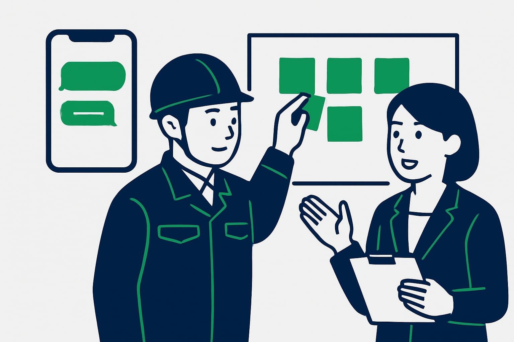
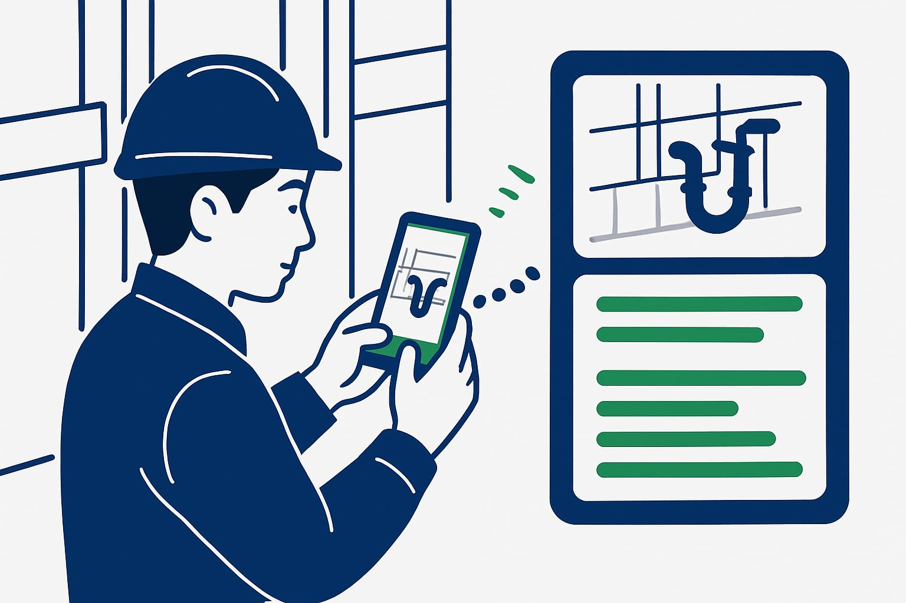

LINE業務改善を建設業で始める方法と見積日報写真の整理
現場ではLINEが一番早いのに、事務所ではあとから見積書、日報、写真台帳へ打ち直している。そんな会社は多いです。この記事では、いつものLINEを入口にして、現場メモ、写真、見積依頼を集め、AIシステムで整理する方法を説明します。新しいアプリを覚える前提にしません。
この記事の要点
- いつものLINEを業務の入口にする
- 見積依頼は型を決めると早い
- 写真とメモが日報の材料になる
- AIが分類と下書きを担当する
- 助成金は最新要領で確認
建設業の連絡がLINEだけでは片付かない理由
建設業では、LINEの連絡が一番早い場面が多いです。現場写真、寸法、追加工事の相談、到着時間。どれも電話より残しやすく、移動中でも送れます。
ただし、LINEはそのままだと情報が流れます。写真はグループに残る。見積依頼は別のトークにある。口頭で聞いた変更点は、事務所に戻るころには忘れがちです。
問題は、LINEを使うことではありません。LINEの先に、整理する場所がないことです。連絡は早いのに、あとから事務員が探して、聞き直して、Excelや台帳へ打ち直しています。
LINE業務改善では、LINEを単なる連絡ツールではなく、現場の情報を集める入口にします。その先でAIシステムが下書き、分類、台帳化を手伝う流れにします。
LINE業務改善を建設業で始める前に決めること

最初に決めるのは、難しいシステム名ではありません。LINEで何を受け付けるかです。小さな会社なら、最初は3つで十分です。
- 見積依頼
- 現場写真と日報メモ
- 請求や納品書の確認
次に、送る型を決めます。たとえば、見積なら現場名、住所、依頼内容、希望日、写真。日報なら現場名、作業内容、人数、時間、写真。この項目だけで、事務所の聞き直しが減ります。
大事なのは、現場に新しい長文を求めないことです。決まった言葉で送れるようにします。たとえば、文頭に【見積】、【日報】、【請求確認】と付けるだけでも、AIシステムが分類しやすくなります。
DX職人では、このようなLINEの送信ルールを、現場の負担が少ない形に合わせて設計します。
現場から事務所へLINEで見積依頼を送る型
LINEで見積依頼を現場から事務所へ送るなら、自由文だけにしないことが大切です。自由文は早い反面、必要な情報が抜けます。
たとえば、現場では次のように送ります。
【見積】山田邸 外構追加 住所：横浜市〇〇区 内容：フェンス2m追加、既存ブロック上 希望：今週中に金額がほしい 写真：現場写真を3枚添付
この形なら、事務所はすぐ確認できます。AIシステムをつなぐと、次のような返答も作れます。
受付しました。見積依頼として登録しました。確認が必要な点は、フェンスの種類、色、高さです。
ここまでできると、見積担当はゼロから文章を作る必要がありません。現場写真とメモを見ながら、見積書の下書きや確認リストを作れます。
LINEの写真を現場報告と日報につなげる

LINE 写真 現場報告 日報の効率化でつまずくのは、写真だけが送られてくることです。写真だけでは、どの現場の、何の作業か分かりません。
おすすめは、写真に一言だけ添える運用です。たとえば、佐藤ビル 3階 配管 施工後 15時のように送ります。長い文章はいりません。
AIシステムは、その一言から現場名、場所、工程、時間を読み取ります。そして、日報の下書きに入れます。写真も施工前、施工中、施工後のように分けやすくなります。
夜に事務所へ戻ってから日報を書く会社では、この差が大きくなります。現場で送ったメモが、そのまま日報の材料になるからです。
請求確認と台帳づくりもLINEを入口にする
LINEで扱えるのは、見積や日報だけではありません。納品書、領収書、材料の追加、外注先からの確認も、入口をそろえると整理しやすくなります。
たとえば、職人さんが材料を急ぎで買ったとします。その場でレシート写真と、現場名、用途をLINEに送ります。事務所は月末にまとめて聞く必要が減ります。
AIシステムは、送られた内容を請求確認、経費確認、追加工事メモなどに分けます。台帳の下書きに入れておけば、あとから検索しやすくなります。
もちろん、最終確認は人が行います。AIは判断を丸投げする相手ではありません。探す、分ける、下書きする作業を減らす相手です。
LINE公式アカウントとLINE WORKSの違いを知る
小さな建設会社が迷いやすいのが、どのLINEを使うかです。個人のLINEだけで始めると早いですが、退職時や履歴管理で困ることがあります。
大まかには、次のように考えると選びやすくなります。
| 形 | 向いている場面 | 注意点 |
|---|---|---|
| 個人LINE | すぐ試したい | 情報が個人に残りやすい |
| LINE公式アカウント | 協力会社や顧客から受けたい | 社内業務用の整理は工夫が必要 |
| LINE WORKS | 社内チャットを管理したい | 新しい運用に慣れる時間が必要 |
| LINE＋AIシステム | 送信内容を業務データにしたい | 最初に分類ルールを決める必要がある |
大切なのは、道具の名前から入らないことです。現場が今どのLINEなら使えるか。事務所は何を台帳化したいか。ここから決めると失敗しにくくなります。
AIシステムが下書き・分類・台帳化を担当する
LINE業務効率化を建設業で進めるなら、AIシステムは裏方として使うのが向いています。現場にAIを意識させすぎないことが大切です。
流れはシンプルです。
- 現場がいつものLINEで送る
- AIシステムが内容を読む
- 見積、日報、請求確認などに分類する
- 下書きや確認リストを作る
- 事務所が見て、直して、確定する
たとえば、見積依頼なら確認事項を出します。日報なら作業内容の下書きを作ります。写真なら現場名や工程で整理します。
DX職人の考え方も同じです。新しい画面を覚えてもらうより、いつものLINEから始める。そこからAIシステムが、事務所の打ち直しを減らします。
小さく始める手順と助成金の確認ポイント
最初から全業務を変える必要はありません。まずは、事務所の聞き直しが多い業務を1つ選びます。おすすめは、見積依頼か現場写真の日報化です。
進め方は次の順番です。
- 1週間だけ、現場から来るLINEを見直す
- 見積、写真、請求などに分類する
- 送信テンプレートを1つ作る
- 事務所で下書きに使える形を決める
- AIシステムで分類と下書きを試す
費用面では、IT導入補助金などが使える場合があります。対象になるツール、申請時期、補助内容は年度で変わります。必ず最新の公募要領で確認してください。
また、助成金の種類によっては、AIシステムの使い方を社内に定着させるための説明や研修が関係する場合があります。ここは制度ごとに扱いが違います。
DX職人では、LINEを使った業務改善の設計と、AIシステム導入の相談を行います。まずは、いまLINEで流れている見積依頼、写真、日報メモを見せていただくところから始められます。
よくある質問
建設業の業務改善はLINEだけでできますか？
連絡の入口としてはLINEで十分始められます。ただし、写真や見積依頼を後で使うには、分類や台帳化の仕組みが必要です。LINEとAIシステムを組み合わせると、事務所の打ち直しを減らしやすくなります。
LINEで現場写真を送るだけで日報になりますか？
写真だけでは、現場名や作業内容が分からないことがあります。写真に現場名、場所、作業内容、時間を短く添えると、日報の下書きに使いやすくなります。AIはその情報を読み取り、日報作成を補助できます。
個人LINEとLINE公式アカウント、LINE WORKSはどれがよいですか？
すぐ試すなら個人LINEでも始められますが、履歴管理には注意が必要です。顧客や協力会社から受けるならLINE公式アカウント、社内管理を重視するならLINE WORKSも候補です。目的から選ぶことが大切です。
LINEとAIシステム導入に助成金は使えますか？
IT導入補助金などを活用できる場合があります。ただし、対象ツール、申請条件、締切は年度で変わります。必ず最新の公募要領で確認してください。制度によっては社内への定着支援が関係する場合もあります。
ITが苦手な職人でもLINE業務効率化は使えますか？
新しいアプリを覚える前提にしないことがポイントです。いつものLINEで、文頭に【見積】や【日報】を付ける程度から始めると使いやすくなります。難しい操作は事務所側とAIシステムで受け持ちます。